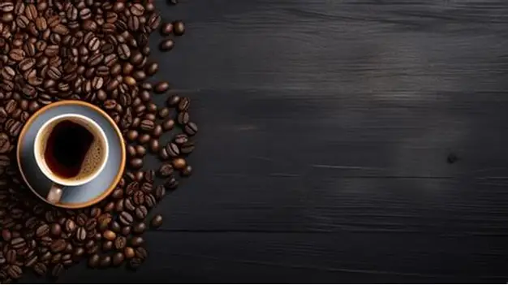
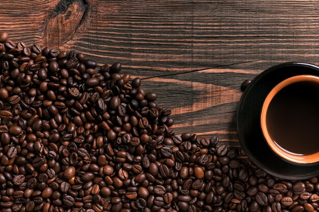
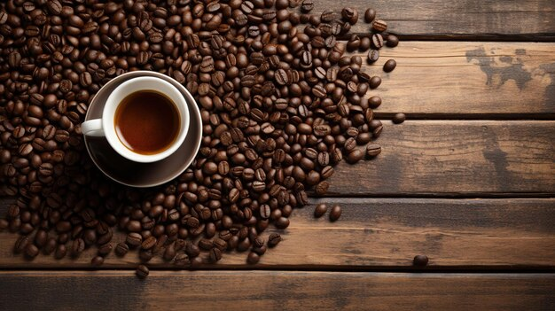
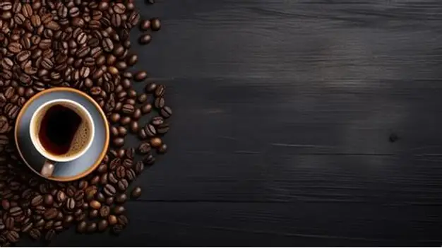
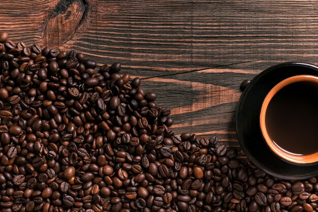
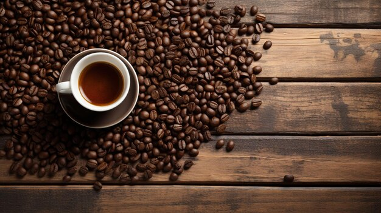

HISTORIA DE LA EMPRESA
Miski nació del amor por el café y la tradición. Fundada en 2023, nuestra cafetería toma su nombre de la palabra quechua “miski”, que significa “dulce”. Este nombre representa todo lo que queremos ofrecer: un espacio cálido, auténtico y lleno de sabor.
Todo comenzó como un pequeño sueño de compartir el verdadero sabor del café peruano, cultivado en nuestras ricas tierras andinas y amazónicas. Desde el inicio, nuestra visión fue clara: crear un lugar donde cada taza contara una historia, donde cada cliente se sintiera como en casa y donde los productos naturales y de calidad fueran los protagonistas.
En Miski, no solo servimos café: creamos experiencias. Desde el grano hasta tu taza, cuidamos cada detalle con pasión. Trabajamos con caficultores locales, apoyamos la producción sostenible y promovemos la cultura del café en todas sus formas. Nuestro menú también incluye postres artesanales, jugos naturales y opciones para todos los gustos.
Hoy, seguimos creciendo con la misma esencia que nos inspiró desde el principio: el deseo de compartir momentos dulces, auténticos y llenos de sabor.
NUESTROS VALORES
NUESTRO IMPACTO
Miski no es solo una cafetería, es un puente entre la tradición y el futuro. Nuestro impacto se refleja en: Empoderamiento de productores locales: Trabajamos directamente con pequeños caficultores de regiones como Cajamarca, Cusco y San Martín, asegurando precios justos y relaciones duraderas. Conciencia ambiental: Usamos empaques biodegradables, reducimos el uso de plásticos y fomentamos el reciclaje dentro de nuestro local. Educación y cultura del café: Realizamos charlas, catas y talleres para compartir el arte del buen café con nuestros clientes. Espacio de comunidad: Ofrecemos un lugar seguro y creativo para que jóvenes, estudiantes, artistas y emprendedores puedan reunirse, expresarse y crecer.